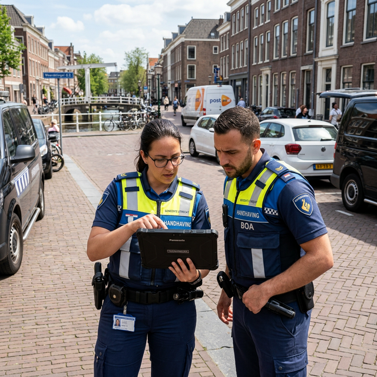
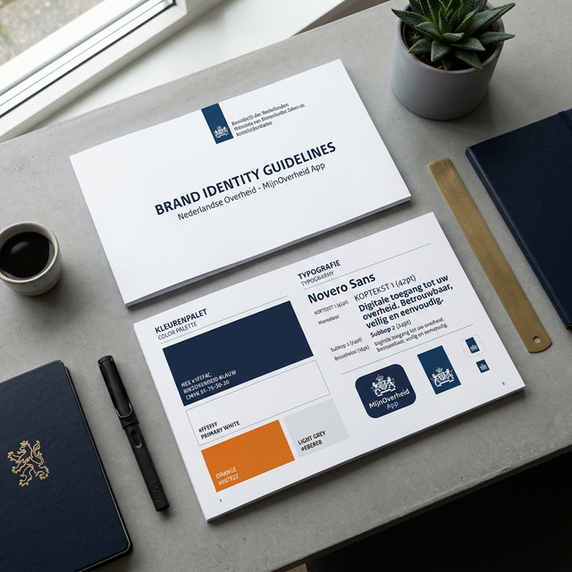
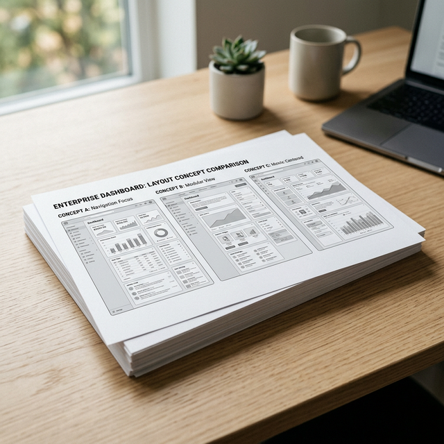
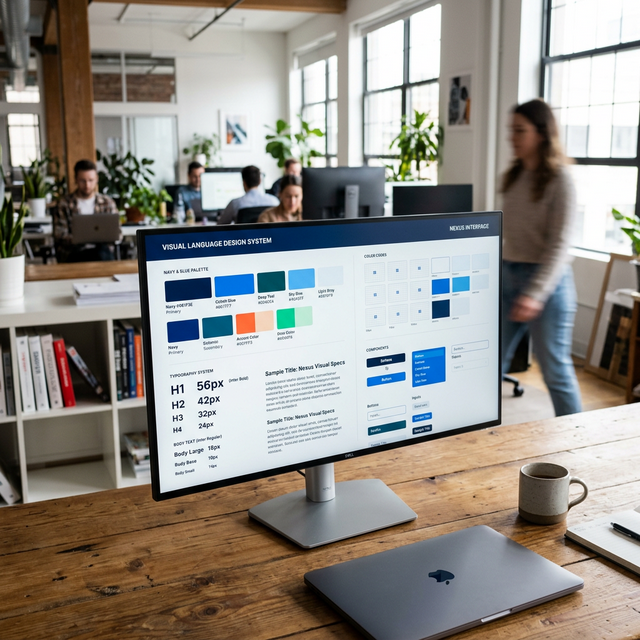
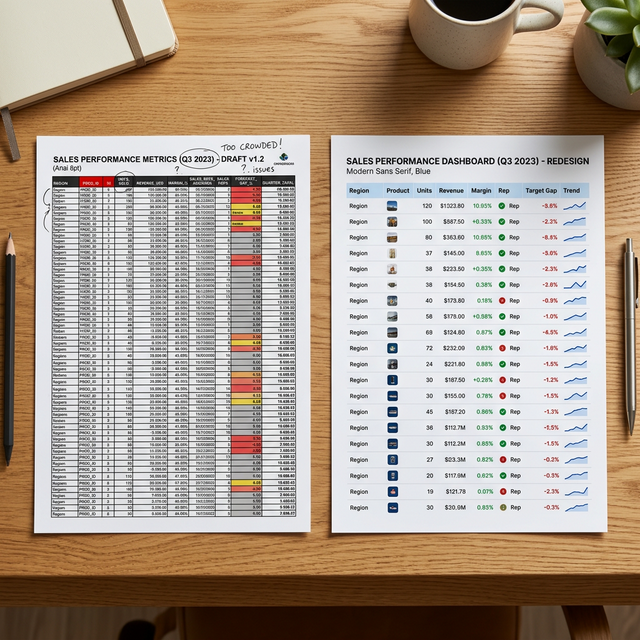
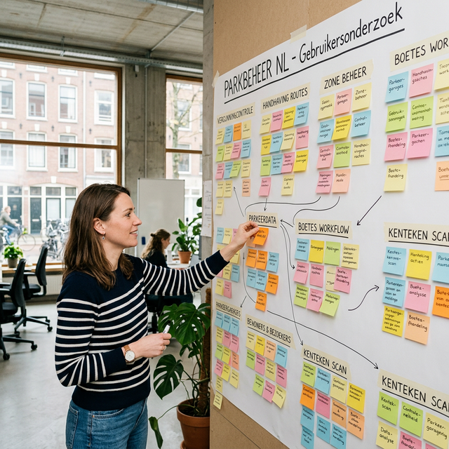
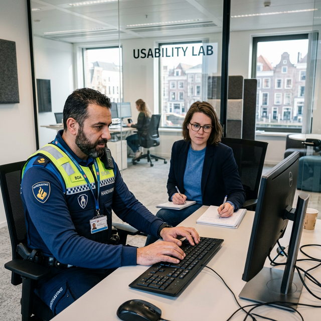

My first enterprise government contract. I was the junior on a three-person agency team — responsible for screen design, interaction patterns, and weekly officer feedback sessions. We replaced a 20-year-old spreadsheet operation with a platform 120+ officers now use daily.
That's how Jan de Vries, a senior parking officer in Amsterdam, described his weekly routine. The Dutch National Enterprise Agency (RVO) manages over 923,000 parking spaces across 42 municipalities — and until 2018, the entire operation ran on shared Excel files, email chains, and a legacy DOS-era terminal system that hadn't been updated since 1997.


"I have 3 browser tabs, 2 Excel files, and a paper notebook open just to check if one car park's EV chargers are compliant. There has to be a better way."
— Wen Li Tay, Parking Operations Officer, North-East Zone
Officers toggled between 5+ tools daily. Average time to answer a simple query: 12 minutes.
No map view existed. Officers couldn't see which zones had capacity issues without manual counting.
EV-charging quotas were tracked in a separate spreadsheet. Two zones missed their Q3 targets entirely.
Updating status for 50 car parks meant 50 individual edits. No bulk select, no export, no audit trail.
Every design decision maps back to two people. Jan and Wen Li aren't composite archetypes — they're real officers who were in our testing sessions from week three. Their names are on the feedback sticky notes in our archive.
I joined the project three weeks after kickoff. Sanne, our senior designer, had already completed the stakeholder interviews. Dirk, the UX lead, was deep in information architecture. My brief: turn the research findings into screens that officers could actually react to. The fieldwork they'd done shaped everything I designed.
14 stakeholder interviews. 6 field ride-alongs with parking officers. Competitive audit of 3 international parking systems (Singapore, Copenhagen, Melbourne). Mapped 47 distinct user tasks into 5 critical workflows.
Core dashboard, car park detail pages, lot allocation tracking. We designed for data density — these screens needed to replace physical printouts, so every pixel earned its place. Weekly reviews with the RVO operations team.
Added the interactive map after officers requested spatial context. Built data viz guidelines when we realized 4 teams were creating charts inconsistently. Documented the design system for the development handoff.
Sanne kept saying "make it stupider" every time I over-complicated a layout. These are from early April 2018, after the first officer interviews — sketched on trains, in meeting rooms, and at my desk at the agency. The dashboard went through six versions before we felt right about it.


Option A — sidebar + top cards — won. Officers needed the data table immediately visible, not below a fold. Their most frequent task was finding a specific car park by number, so the search had to be in the viewport on load.
V1 was a plain HTML table. Officers couldn't filter, select, or export. V2 added filter chips, status pills, bulk select, and pagination. Average "find a car park" time: 12 minutes → 90 seconds.

Dirk built the design system. My job was to apply it consistently across every screen. When I audited the existing internal tools at the start, I found 14 different shades of blue across departments. The system below is extracted directly from the live prototype — every token, every colour, every spacing value is what's actually running in the app above.
This is the task that defined the product. Five stages, two realities.
Ten interconnected screens designed to handle the critical workflows we identified in discovery. Each one was tested with real parking officers before reaching final fidelity.
Jan's Monday morning starts here. Three status cards give a real-time snapshot of all 923,000 spaces. Zone bars surface capacity issues at a glance. The data table below answers any specific query in under two seconds.
Every car park has a single record with seven tabs covering lots, maps, enforcement, land, and building features. Officers no longer need three browser tabs open to answer one question.
Wen Li's quarterly EV compliance check: two filter chips narrow 923K spaces to the relevant 478. Bulk select reveals the non-compliant ones. One click exports a CSV ready for policy review.
After Phase 1 testing, officers requested one thing above all: a map. Cluster markers aggregate car parks by density. Hover to preview counts before committing to a zoom. CCTV and CPG gantry overlays toggle independently.
The lots allocation screen exposes every lot type's breakdown with inline bars that make quota deviation immediately visible. A warning banner fires automatically when any zone misses its EV charging target.
When a new officer logs in for the first time, a four-step guided tour walks them through the platform. Each step spotlights one UI element, explains it in plain language, and moves on. Officers skip it after 2 minutes and never open the help docs. That's the goal.
Settings is organised into four groups — Account, Preferences, Data, and System — covering 14 distinct configuration areas. From zone monitoring defaults to notification thresholds to scheduled exports, every officer has a workspace that matches how they work.
Three more screens round out the system — a self-guided welcome flow, data visualisation standards for the four development teams, and the full information architecture map for the dev handoff.
We ran 3 rounds of moderated usability testing with 12 parking officers across 4 municipalities. Each round was 5 sessions × 45 minutes. We gave officers real tasks (“find all inactive car parks in the East Zone”) and timed them. Some results surprised us.


95% task success on table search. But only 62% could read the zone bar chart correctly. We changed it: Added numerical labels directly on bars and simplified the legend from 7 items to 5.
Officers loved the map concept but got lost zooming in. Clusters would split at awkward zoom levels. We changed it: Added a cluster tooltip on hover (before click) so officers could preview car park counts without committing to a zoom.
4 out of 5 officers tried to export data in the first session. It wasn't in the Phase 1 spec. We added it: Bulk select + CSV export became the most-used feature within 2 weeks of launch.
"I just did in 2 minutes what used to take me half a Monday morning. And I didn't need anyone to show me how."
— Jan de Vries, Senior Parking Officer, Central Zone · After Round 3 testing
The system went live in December 2018. Within 6 months:
I was 25 when this wrapped. It was the most technically complex thing I'd ever designed. Looking back from here:
Round 1 testing used dummy car park numbers. Officers laughed at them and couldn't engage. Round 2, we used their actual data — the feedback immediately became specific, honest, and actionable. Never use dummy data for enterprise tools.
It was the most-requested feature in testing and it wasn't in scope. I should have flagged spatial context as a core need during the kickoff, not six weeks in. I'd learned this from Jan's field ride-along on day one — I just hadn't pushed for it.
As the junior, I deferred too much in the early sprints. When a layout felt wrong I'd try to solve it alone before raising it. Sanne always had a sharper take. I should have flagged issues earlier and let the senior brains help faster.